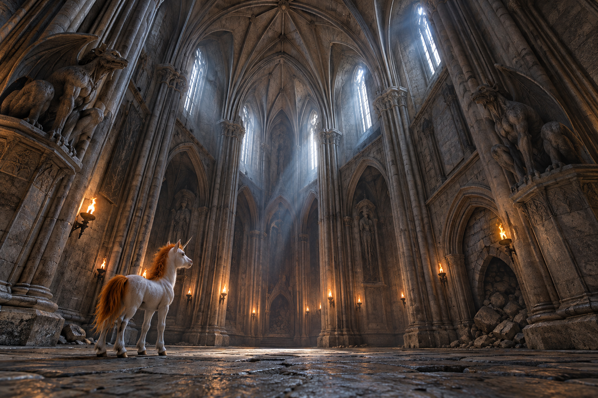
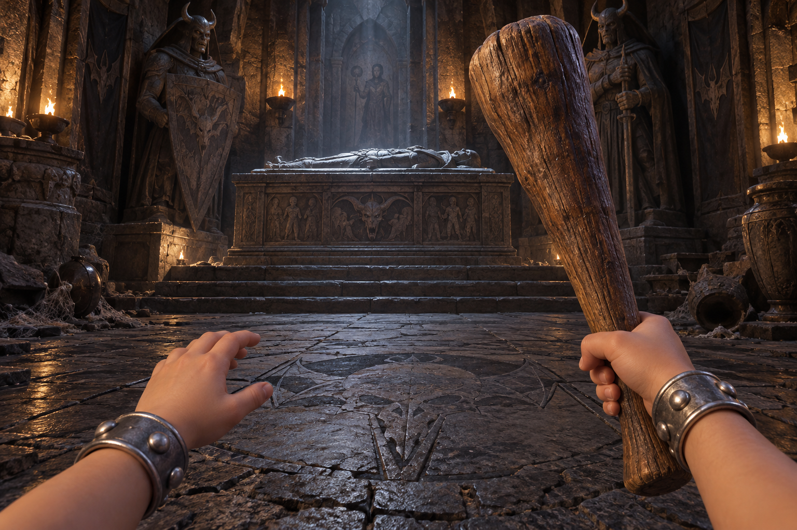
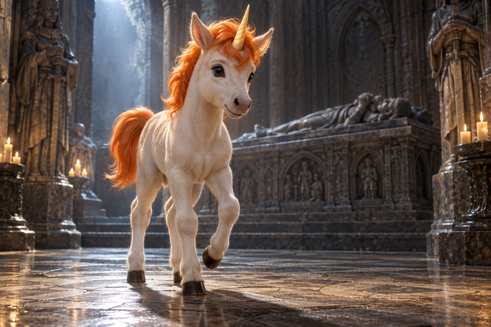
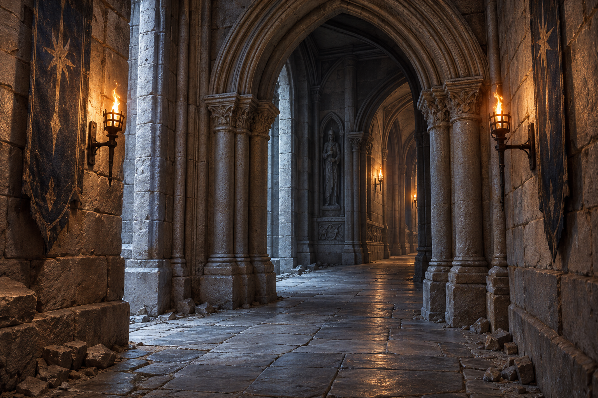
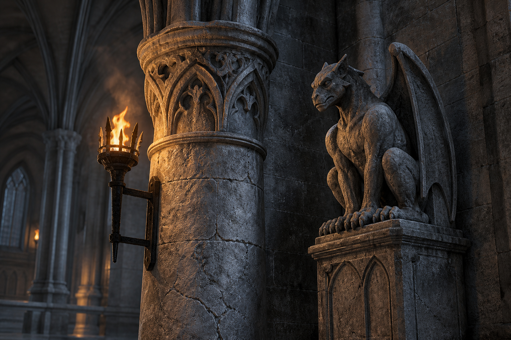
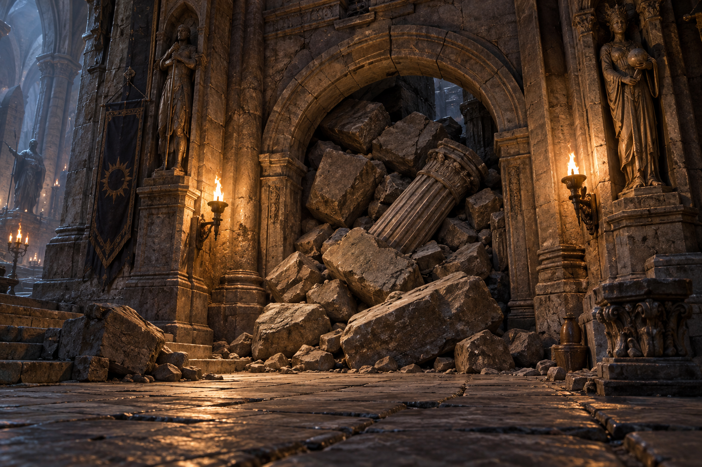
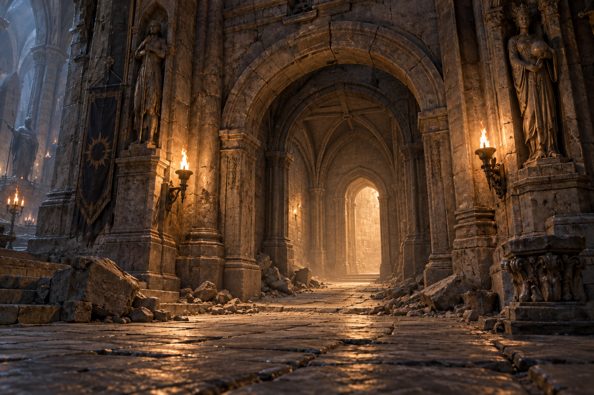

Sete imagens-alvo para avaliação. Teto da sala inspirado em capela, muito alto. Bobby continua criança; Uni continua filhote. Imagens conceituais geradas por IA: não são capturas do jogo nem comprovação de desempenho. Ornamentação de fundo é exploratória; alturas e movimentos ainda precisam ser definidos na produção.






